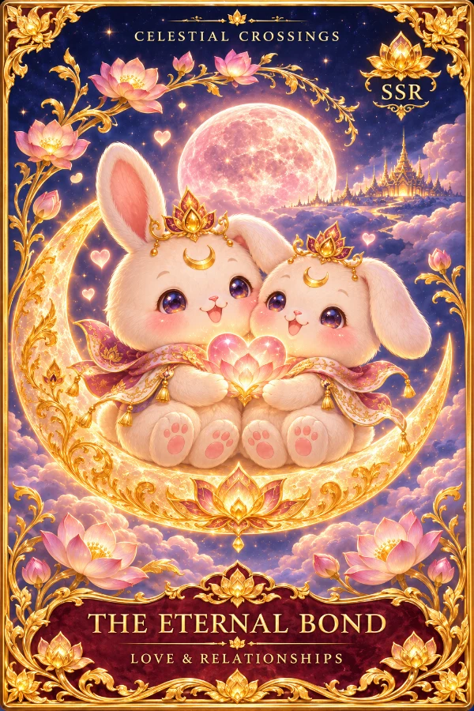
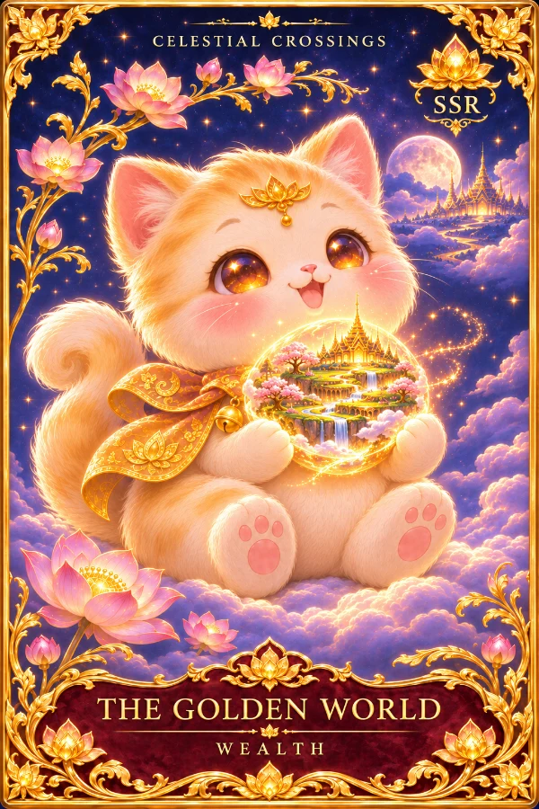
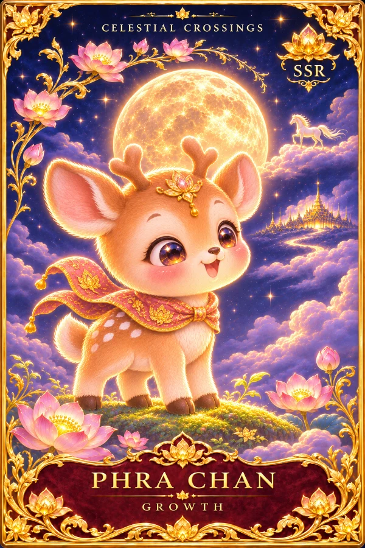
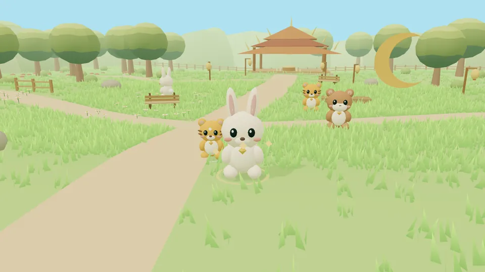

01
Read
Reflect on a week or day that matters.
A LITTLE GUIDANCE. A LITTLE MAGIC.
Reflect on your next step with a free reading. Discover a symbolic charm, then meet its little companion.



Reflect on a week or day that matters.
Draw a symbolic charm. This is separate from your reading.
Your collected charm becomes a companion in Pet World.
SIX WAYS TO REFLECT
Each charm carries a gentle theme for life’s moments. Explore meanings like love, work, wellbeing, and growth.
A LITTLE WORLD TO COME BACK TO
Bring a charm you collect into the meadow. Wander, feed your companion, and take a quiet moment.
Explore Pet World
A FEW THINGS TO KNOW
Yes. Read this week, next week or a specific day for free, without an account or payment.
These are original reflections for entertainment. The current method uses editorial selection rules, not a traditional birth chart or a guarantee of future events.
Guest charms stay in this browser. If accounts are available, signing in uses a separate online collection; local charms are not automatically transferred. Birth details stay on the reading page and clear when you leave or reload.
You can explore without one. A charm you draw becomes a companion you can bring along. Browsing a card does not add it to your collection.